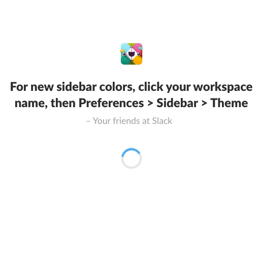
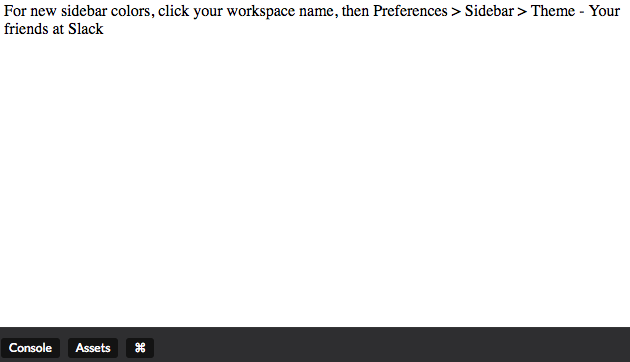
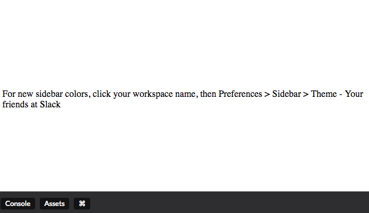
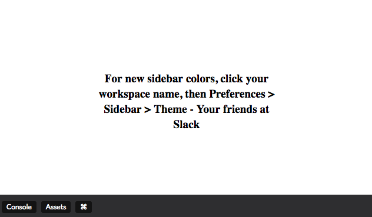
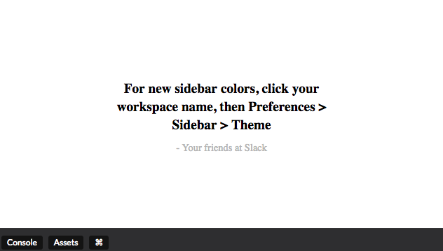
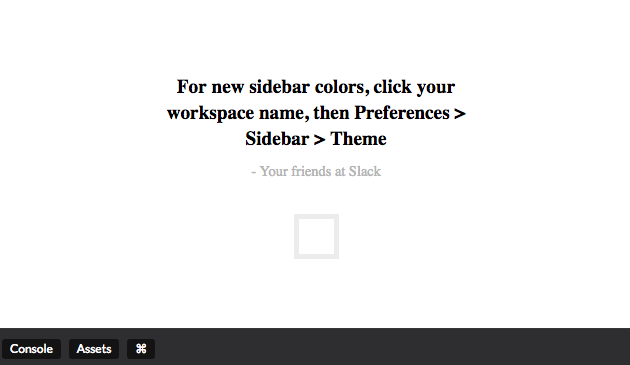
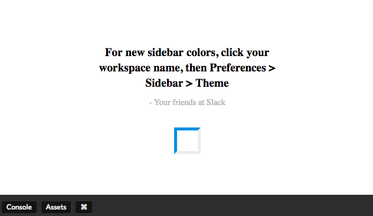
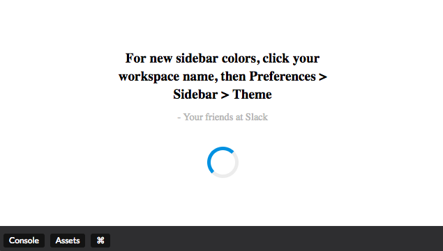
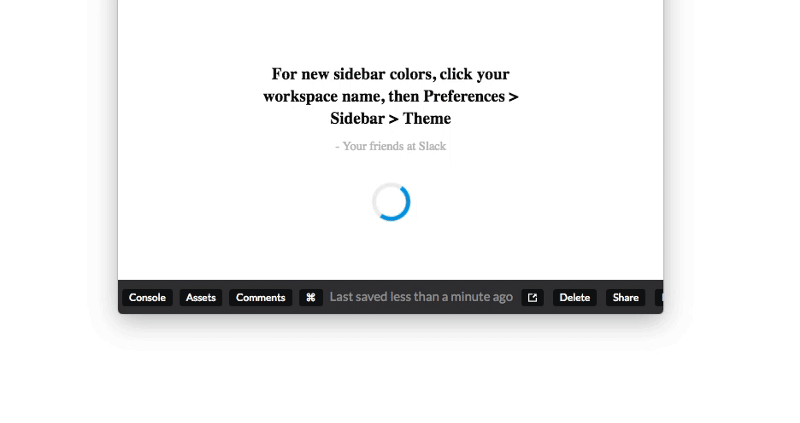

5分钟写出一个不错的loading界面
首先，让我们先看一下效果图。

这就是我们将要实现的 DEMO。
是不是觉得看起来很眼熟？
如果眼熟的话，那你可能在 Slack 上见过它！
让我们只使用 css 和 html，来实现一下这个 loading 页面吧！
如果你想小试身手，可以在 Codepen 上创建一个 pen，编写教程代码。
现在，让我们开始吧！
1. 添加 class 作为标记
html 部分很简单，如下面代码所示：
|
|
是不是很简单？
如果你不清楚为什么类名中出现了破折号，我在 这篇文章 中解释了背后的原因。
现在我们有一些文本，以及一个类名为 loading_anim 的 span 标签。
效果图如下：

还不赖，对吧？
2. 将内容居中
现在的效果并不理想，下一步我们将 class 为 .loading 的 session 标签在页面上居中。
|
|

现在居中了！
有没有看起来好一点？
3. 设置加载文本的样式
现在，让我们设置 class 为 .loading 的文本样式，使其看上去更棒。
|
|

4. 设置下方 .loading_author 的样式
|
|
看看效果！

5. 创建 loading 动画
终于到了备受期待的一步。这是最长的一个步骤，在此之前我会花一些时间确保你了解它的工作原理。
如果您遇到困难，请发表评论，我很乐意提供帮助。
再回顾一遍 loading 的效果。
我们可以看到 loading 圆环一半是蓝色，另一半是灰色的。默认情况下，HTML 元素不会被切分。所有HTML元素可以看作盒子。第一个真正的挑战是如何使 class 为 .loading__anim 的元素包含两种边框颜色。
如果你现在还没有太明白，不要担心。后面会继续进行讲解。
首先，让我们先定义 loading 的大小。
|
|
现在，loading 组件与文本位于同一行，这是因为 span 标签是 html 中的内联元素。
我们现在修改样式，使其在另一行展示。
|
|
最后，让我们为其设置 border 属性。
|
|
在元素周围会形成宽度为 5px 的灰色边框。
下方为效果图。

显示出一个灰色的边框。
让我们继续完善它。
一个元素有四条边，top、bottom、left 和 right。
我们之前设置的 border 对四个边都实现了相同的渲染。
我们现在需要对 loading 组件的边框设置不同的颜色。
无论你选择哪条边都可以，在下方代码中以 top 和 left 举例演示。
|
|
现在，left 和 top 边界将呈现蓝色。效果图如下：

看起来还可以。
我们马上要成功了！
这个 loading 组件是圆的，而不是方的。让我们通过给 .loader__anim 组件设置 border-radius 属性为 50%，来改变它的形状。
效果图如下：

不是很差，是吧？
最后一步是制作动画。
|
|
希望您对 CSS 动画 有所了解。1 turn 等于 360 deg，表示完整的转了一个 360 度的圈。
并按如下方式使用：
|
|
哟！我们做到了！
请看最终效果图。

lo hicimos! (西班牙语)
是不是很酷？